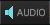

Pressing keys allows you to play a synthesizer Control the Traktor Software Transform you into Martin Garrix Produce music from scratch
Crossfader Gain Knob Volume Fader Master Gain

Artist Date Added Rating All of the above
Beat match the new track with another track already loaded Auto play the track in time with a currently playing track Analyse the BPM and Key information None of the above
Green Yellow Blue White
Beer Pong Master Breaths Per Minute Beats Per Minute Business Program Manager
Adjust the BPM Adjust the volume Adjust the tempo Adjust different frequencies
Oliver Heldens – Koala vs. 3LAU – We Came to Bang (feat. Luciana) Martin Garrix – Virus(How About Now) vs. Fox Stevenson & Curbi - Hoohah Deadmau5 & Rob Swire – Ghosts & Stuff vs. Firebeatz & KSHMR - No Heroes (feat. Luciana) Will Sparks – Bourne vs. Hardwell - Arcadia